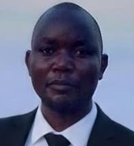

Laston James Sichali | WDD 130
Greetings! I am Laston James Sichali, a dedicated software development student from Malawi, Africa. My academic journey is through the BYU Pathway Worldwide program at Brigham Young University-Idaho, where I am gaining the skills to not just code, but to create. I am deeply motivated by the potential of technology to empower communities, improve access to information, and drive sustainable growth. My vision is to contribute to the growing tech ecosystem in Malawi and across Africa, building tools that make a tangible difference in people's lives.